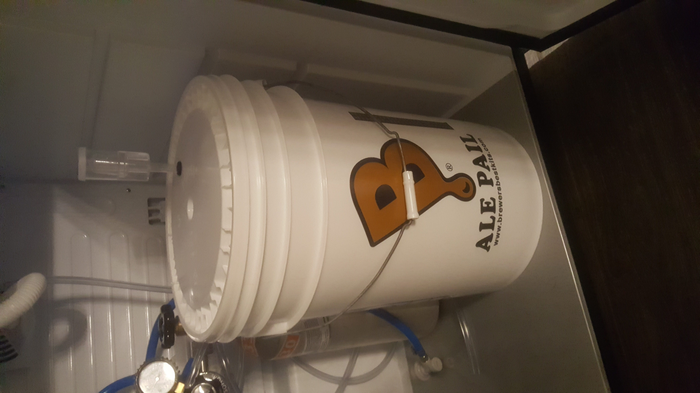
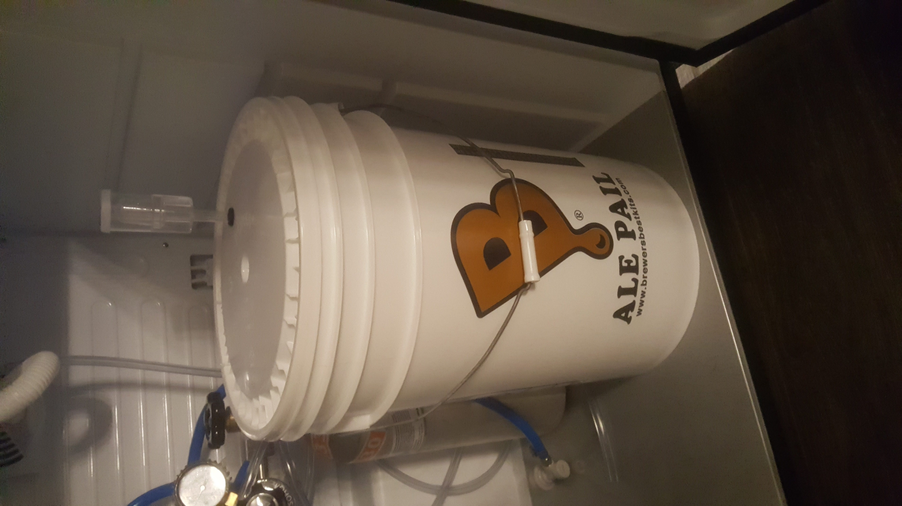

proudly pours

"come noble einherjrar"
Home
Gaming
Movies

The picture above is an IPA I have going, it is on it's primary fermentation. The yeast doesn't really like fluctuating temperature so we have it in the Kegorator
to maintain a constant, cool temperature. The first thing to know about brewing is that SANITATION is the name of the game. Keeping your equipment
clean will keep you from experiencing a funky taste, and will keep you from getting sick. Also it's just good house keeping to thouroghly clean your
stuff after each batch, as it will prevent your lines from getting gummed up or developing a blockage. Come back next week for tip number two, where
I will explain some pitfalls my wife and I fell into.
"come noble einherjrar"
Home
Gaming
Movies

The picture above is an IPA I have going, it is on it's primary fermentation. The yeast doesn't really like fluctuating temperature so we have it in the Kegorator to maintain a constant, cool temperature. The first thing to know about brewing is that SANITATION is the name of the game. Keeping your equipment clean will keep you from experiencing a funky taste, and will keep you from getting sick. Also it's just good house keeping to thouroghly clean your stuff after each batch, as it will prevent your lines from getting gummed up or developing a blockage. Come back next week for tip number two, where I will explain some pitfalls my wife and I fell into.